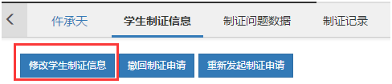

制证信息修改
功能描述
如果您发现学生的制证信息有误，可通过该功能修改“制证学校名称”、“盲童视力”、“毕业证书类型”、“毕业类型”、“肄业时间”、“肄业年级”、“肄业学期”。
注意：只能对未发起制证申请或制证申请已撤回的学生进行修改。学生毕业状态为肄业的，不能修改毕业类型，需填入下面三个信息“肄业时间”、“肄业年级”、“肄业学期”。学生毕业状态为毕业或结业的，不需填入“肄业时间”、“肄业年级”、“肄业学期”。
操作步骤
第一步，毕业生管理->毕业年级学生列表。
第二步，选择学校、校区、年级、班级等筛选条件信息。默认为全部展示状态。
第三步，点击“查询”，系统将自动为您检索符合条件的信息。

第四步，选择您需要修改信息的学生，点击“管理”。
第六步，点击“修改学生制证信息”
第七步，编辑修改内容。
第八步，保存成功。